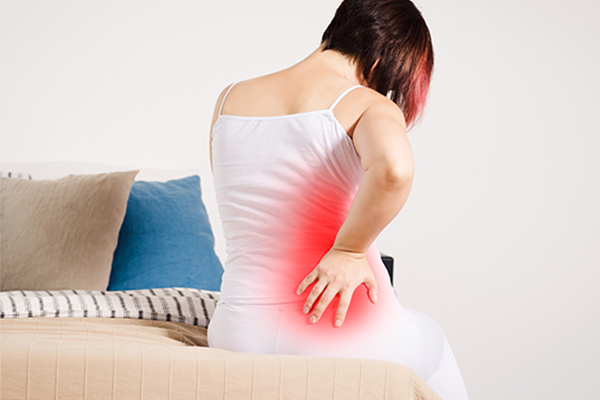

031-622-0700
병원소개
인사말
의료진 소개
둘러보기
척추관절클리닉
허리
어깨
목
무릎
손
발
팔꿈치
주요시술
C-ARM 특수신경치료
프롤로 치료
체외충격파 치료
초음파유도 치료
도수교정클리닉
도수교정 클리닉
대상포진클리닉
대상포진 클리닉
영양수액클리닉
영양수액 클리닉
진료안내
진료시간 및 상담전화
오시는 길
비급여항목
척추관절클리닉
허리
어깨
목
무릎
손
발
팔꿈치
허리
허리디스크
허리디스크(탈출증)는 척추뼈 사이에 위치하여,
허리에 가해지는 충격을 완화시키는 역할을 하는 추간판(디스크)이 여러가지 원인에 의해 손상을 입으면서 추간판 내부에 있는 젤리 같은 수핵이 탈출하여 주변의 척추신경을 압박하게 되고, 다양한 신경통증이 나타나는 질환입니다.
허리디스크는 한 번 발생하면 쉽게 없어지지 않고 심각한 허리통증이 발생할 수 있으므로 주의하셔야 합니다.
원인
잘못된 자세로 인해 허리에 무리가 가해진 경우
노화로 인한 퇴행성 변화
무거운 물건을 들어올리는 일이 반복되면서 무리한 압력이 가해진 경우
교통사고 혹은 낙상 등에 의한 외부 충격
증상
허리가 아프고 쑤신다.
엉덩이나 다리까지 뻗치는 통증이 있고 저리다.
누워서 다리를 들어올릴 때 통증이 더 심해진다.
기침을 할 때나 운동을 할 때 등 힘이 들어가는 순간에 통증이 심해진다.
허리를 숙이거나 앉아있을 때 통증이 심해진다.
퇴행성디스크
퇴행성디스크는 외부 충격 또는 척추에 반복적으로 가해지는 무리한 자극으로 인해 추간판의 변성이 진행되고 염증이 생기면서 허리 통증이 나타나는 질환입니다.
질환 이름과는 달리 학생들, 그리고 젊은 층에서도 많이 발생하는 질환이며, 몇 개월 또는 1~2년마다 통증이 반복되는 경우가 많습니다.
원인
허리를 구부리는 앉는 습관
무거운 물건을 반복적으로 많이 드는 직업
운동 부족으로 인한 근력 약화 또는 노화로 인한 추간판의 퇴행
증상
아침에 일어날 때 허리가 아프지만 움직이면 통증이 덜해진다.
세수하거나 머리 감으려고 허리를 숙일 때,
양말이나 신발 신을 때 통증이 심하다.
오랜 시간 걷거나 앉아있을 때 통증이 심해진다.
X-ray 에서는 이상이 없다고 하지만, 주기적으로 통증이 반복된다.

척추관협착증
척추관협착증은 허리에 신경이 지나가는 통로인 척추관이 여러 원인에 의하여 크기가 좁아지면서 신경을 눌러 통증이 발생하는 질환입니다.
주로 연세가 있으신 분들에게서 많이 발생하는 질환으로 이는 노화로 인해 허리의 뼈가 틀어 지고 두꺼워지면서 신경이 압박되어 나타나는 경우가 많습니다.
원인
뼈와 인대가 노화되면서 척추관이 좁아진 경우
척추관 주변의 점막이 부어올라 신경을 자극한 경우
척추전방전위증으로 척추의 뼈가 뒤로 밀려나 협착되는 경우
선천적으로 좁은 신경관을 가지고 태어난 경우
증상
허리 통증도 있지만, 엉덩이와 다리, 발 증상이 심한 경우가 많다.
종아리 통증으로 밤에 잠을 설친다.
앉아있거나 누워있을 때는 괜찮으나,
오래 서 있거나 걸을 때 통증이 있어서, 잠깐 쉬다가 다시 걷는 일이 많다.
허리를 구부렸다가 펼 때 통증이 있는 경우
계단을 내려갈 때보다 오를 때가 편하다.
척추전방전위증
척추전방전위증은 위 척추뼈가 아래 척추뼈보다 배쪽으로 밀려나가면서
허리통증과 다리저림을 일으키는 질환으로 심할 경우 엉덩이나 하지마비를 일으키기도 합니다.
원인
사고로 인해 척추뼈의 골절이 생겼을 때
노화로 인해 디스크, 관절이 퇴행했을 때
선천적으로 척추 관절의 발육이 부진할 때
증상
아침에 일어날 때 허리통증이 심하다.
허리를 뒤로 젖힐 때 통증이 심하다.
허리에 툭 튀어나온 것이 느껴지고 그 부위를 건드리면 통증이 느껴진다.